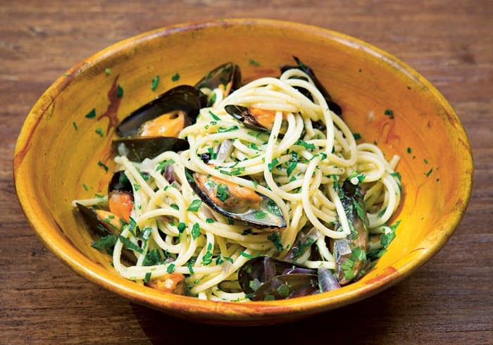
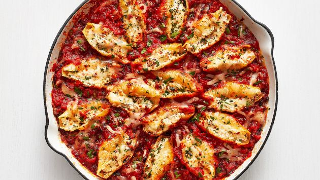
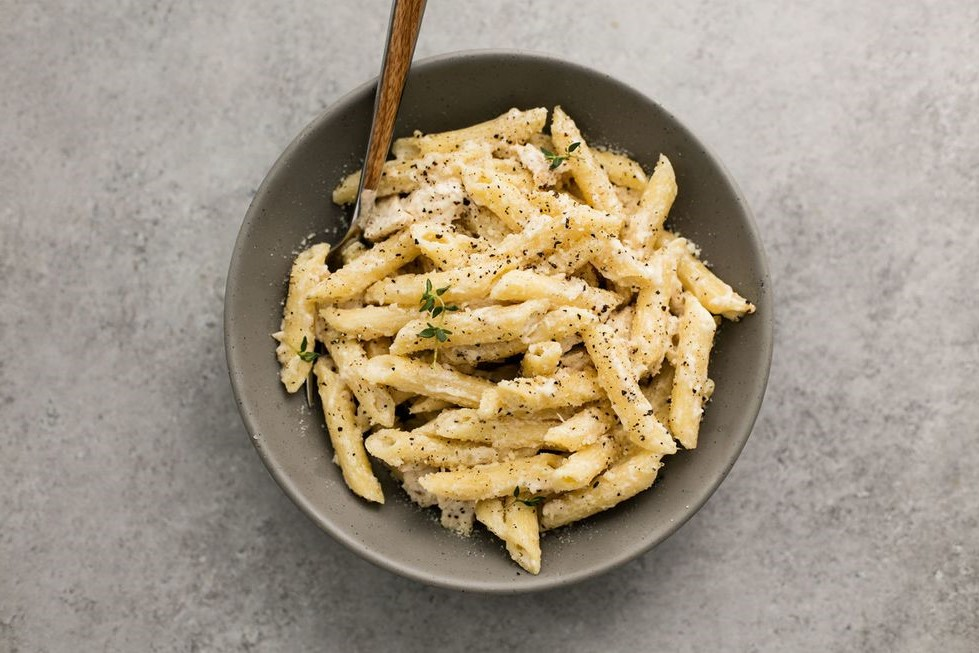

|
|
Welcome to all pasta lovers!This pure HTML web-site was created to, first of all, revise what I've learnt about HTML. Hope I'll remember more after I complete it! Secondly, I wanted to express my great love to the food of Gods - devine pasta. One day I'll make a much more spectacular web-page to worship this dish. |
|
My name is Viktoriia and one of the things that always makes me happy is good food. If this good food means pasta, I'm the happiest girl in the world. Actually, I'm an English teacher, but I'm currently working with an HTML, CSS3 and JS course which you can also join next month. I even have a cool group already. My experience isn't great, but I've already created a little cute website |
Mouth-watering recipies I've ever tried |
Delicious sauses that go with pasta
|
The best pasta recipiesClick on the picture to find out more |
||
|---|---|---|
Mussels with Chinese sausage and rice noodles |
Stuffed pasta bake bolognese |
|
One-pot tomato pasta
|
Creamy Garlic Chicken Pasta |
|
2. What do you like your pasta with?
3. What are your favourite vegetables? (more than one answer is possible)
4. If you already have a favourite pasta, let me know to find something alike
5. Do you like pasta?